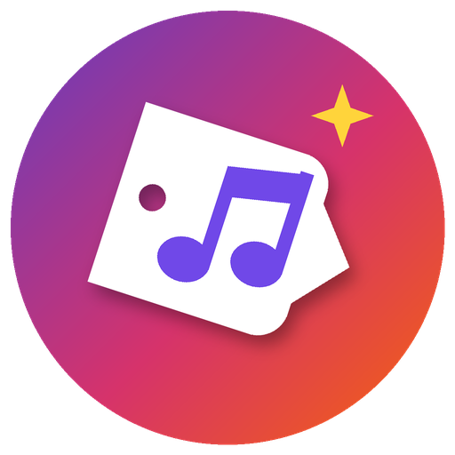
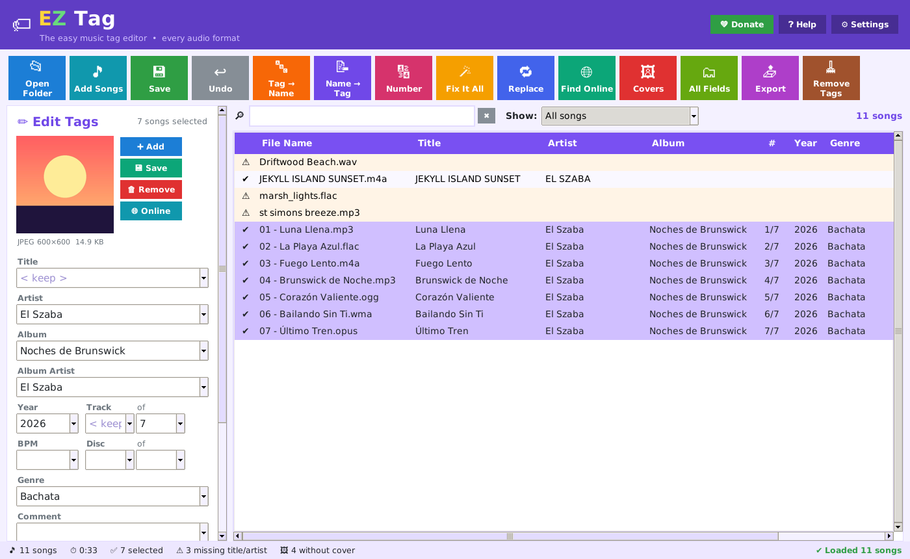

Fix your music info. Easy.
A free, colorful music tag editor for Windows. Big buttons, plain English, and every feature the pros use — for MP3, FLAC, M4A, WMA, WAV and every other kind of song file.
⬇ Download for Windows Version 1.1.0 · 14 MB · Windows 10 / 11 (64-bit) 💚 Donate with Cash App $Szaba · only if you want to100% free. No ads, no sign-up, no subscription. Your music never leaves your computer.
When you open EZ Tag it checks for a new version and downloads it in the background. Click the yellow bar to update now, or it updates by itself when you close it. Your version is shown at the top. No more downloading it again.
Click songs, type the title, artist, album, year, track, genre and comment, press Save. Pick 100 songs and change them all at once — < keep > leaves each song's own value alone.
Add a picture to a whole album in one click, use the cover.jpg in each folder, copy covers between songs, save them out, shrink giant ones, or remove them.
Rename files from their tags like 01 - Song Title.mp3, or sort them into Artist\Album folders. You see every new name before anything changes.
Fill in tags from file names with a simple pattern — or press 🧠 Smart Guess and EZ Tag figures out the track number, artist and title by itself.
Look up the album on MusicBrainz or iTunes and fill in every song — titles, track numbers, year, genre, label — plus a big clean cover. Free, no account.
One button cleans messy tags: extra spaces and _underscores_, ALL CAPS, missing titles, track numbers stuck in titles, dates like 2019-05-01, and songs with no cover.
Number tracks 1, 2, 3 (or 01, 02, 03) in list order, start over for each album, and fill in the total.
Change words in one field, all fields, or in file names. Whole words, case and advanced patterns if you want them. Plus UPPER / lower / Title Case.
Paste a track list from a website or CD booklet and every song gets its title in order.
Album artist, composer, lyrics, BPM, key, mood, ISRC, label, sort names… and your own custom fields.
Make a pretty web page, an Excel spreadsheet, a text list, or an M3U playlist of your songs.
Spot the same song saved twice and see which copy has the better quality.
Changed your mind? Undo takes back the last change — even renamed files.
In Windows, right-click a music folder and pick Edit tags with EZ Tag.

1. Open a folder → 2. Pick songs → 3. Type or click a colorful button → 4. Save
| You get | In EZ Tag |
|---|---|
| Edit many songs at once, every field, cover art, all audio formats | ✅ |
| Tag → File name, File name → Tag, Text → Tag, Set a field with format codes | ✅ |
| Free online album lookup with covers (MusicBrainz + iTunes) | ✅ |
| Big colorful buttons, previews before every change, plain-English help | ✅ |
| Smart Guess tags from file names | ✅ |
| One-click Fix It All cleanup | ✅ |
| Show only songs missing info or covers | ✅ |
| Find duplicate songs, shrink giant covers | ✅ |
| Undo — even file renames | ✅ |
EZ Tag is free for everyone and always will be. If it saved you time, a tip of any size helps keep it going. Send it on Cash App to $Szaba. Thank you!
💚 Donate with Cash AppNo. EZ Tag only changes the info you ask it to change and leaves the music itself untouched. Every converter shows you a preview first, and Undo takes back the last change.
Yes. MP3s are saved as ID3v2.3 by default, the version that works everywhere. You can switch to ID3v2.4 in Settings.
Only for Find Online. Everything else works offline.
Not yet — it's for Windows 10 and 11 (64-bit).
No catch. No ads, no accounts, no time limit. Donate only if you feel like it.
EZ Tag keeps a note of any problem at
%APPDATA%\EZ Tag\error-log.txt. Send that text and describe what you were doing.